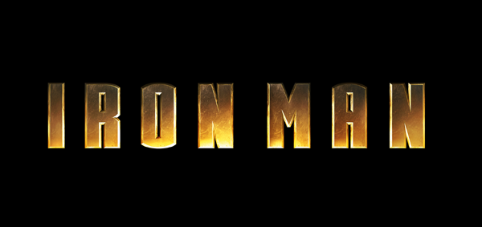
- S.H.I.E.L.D. is subtly introduced by Agent Colson using its full name of the "Strategic Homeland Intervention, Enforcement and Logistics Division"
- Nick Fury - director of S.H.I.E.L.D. - shows up in a post credit sequence to propose an idea of the Avengers Initiative
- Tony Stark aka Iron Man is introduced into the MCU
- Happy Hogan - Tony Stark's bodyguard - is introduced into the MCU
- Pepper Potts - Tony's love interest and personal assistant - is introduced into the MCU
- J.A.R.V.I.S. - Tony's artificial intelligence program - is introduced into the MCU. J.A.R.V.I.S. stands for Just Another Rather Very Intelligent System.
- Colonel James Rhodes - Tony's bestfriend - is introduced into the MCU (originally played by Terrence Howard)
- Agent Phil Coulson is introduced into the MCU
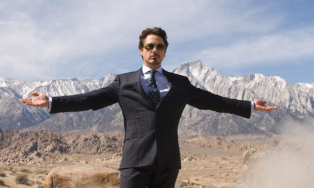
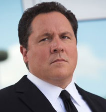
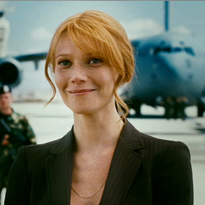
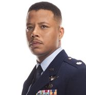
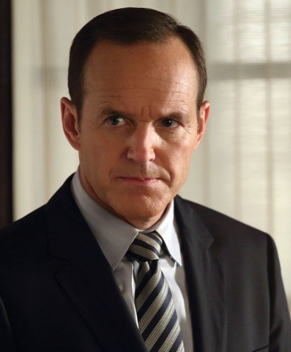
- During a failed attempt to assassinate Tony Stark a Stark Enterprises bomb goes off near Tony, Tony is taken into captivity and an electromagnet is implanted in Tony's chest to prevent shrapnel from reaching his heart.
- While in captivity, Tony Stark invents a smaller version of the arc reactor technology to serve as an upgraded electromagnet implanted in his chest and also create his first Iron Man suit
- Experiencing firsthand how Stark Enterprises is dealing on both sides of the table, Tony uses his Iron Man armor to go behind enemy lines and destroy his weapons
- Tony takes back control of his company, Stark Enterprises, and puts an end to the weapons manufacturing department.
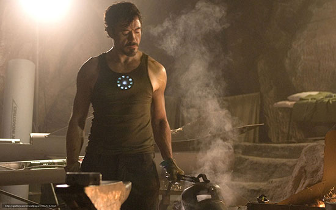
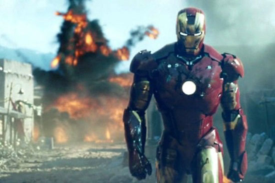
- Tony Stark announces his identity to the world as "Iron Man"
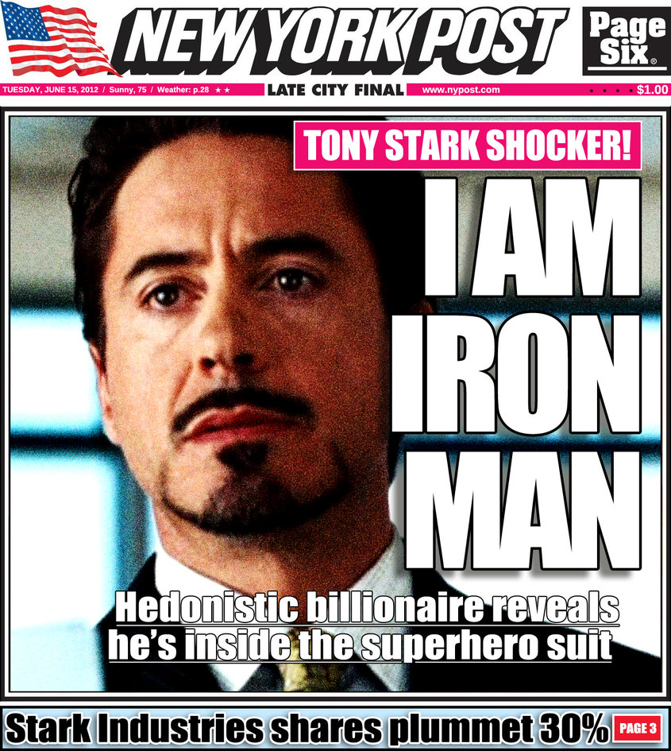
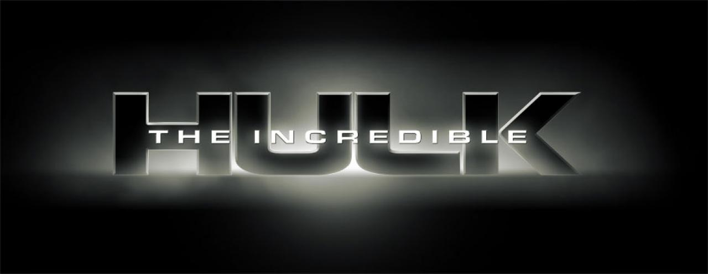
- Tony Stark makes a brief cameo to discuss with General Ross putting together a team
- Bruce Banner aka The Hulk is introduced into the MCU (originally played by Edward Norton)
- General Thaddeus "Thunderbolt" Ross is introduced into the MCU
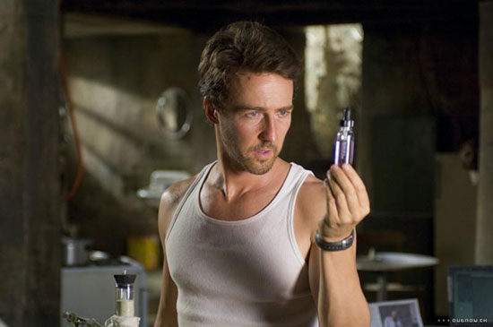
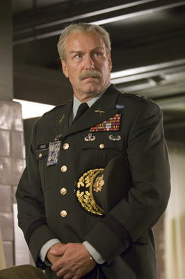
- In a failed attempt to create a super soldier with Gamma radiation, Bruce Banner accidentally transforms himself into the Hulk
- Bruce Banner considers these Hulk transformations to be "incidents" and is unsuccessful in finding a cure for preventing another "incident""
- Ross tries and fails to capture Bruce Banner for the purpose of recreating the transformation on his own soldiers
- When an unstoppable threat hits Harlem, Bruce Banner uses the Hulk to stop said threat and in doing so it's implied that the Hulk might be more than just a mindless vehicle of destruction
- Many months after the above incident, Bruce Banner is seen meditating trying to control at will his transformation into the Hulk
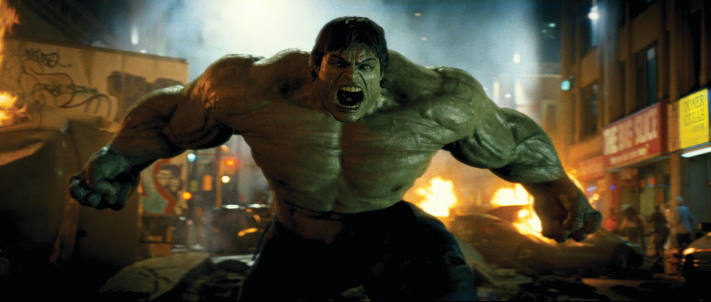
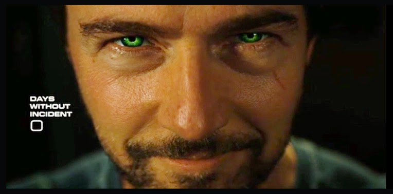
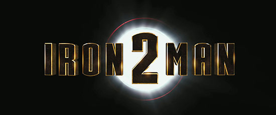
- Agent Phil Colson mentions to Tony that S.H.I.E.L.D. has concerns in New Mexico, which is a subtle reference to Thor's future introduction into the MCU
- Tony uses a prototype Captain America shield as a prop to balance his technological equipment foreshadowing their future dynamic in the MCU
- When drone technology goes haywire at the Stark Expo, Tony saves a little boy's life who turns out to be Peter Parker aka Spider-Man
- The fictional African country of Wakanda can be seen on a map behind Tony Stark in a conversation between Stark and Nick Fury
- In a post-credits scene, Thor's hammer is seen at the bottom of a crater in New Mexico

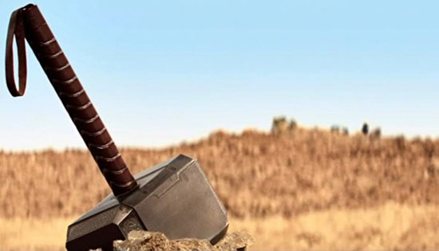
- Colonel James Rhodes aka War Machine is re-introduced into the MCU (Now played by Don Cheadle)
- Natasha Romanoff aka Black Widow is introduced into the MCU
- A middle-aged Howard Stark - father of Tony Stark - is introduced into the MCU
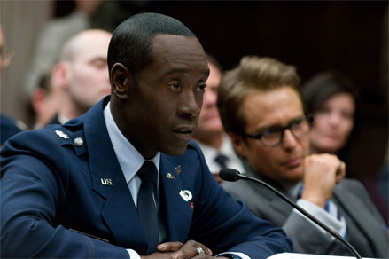
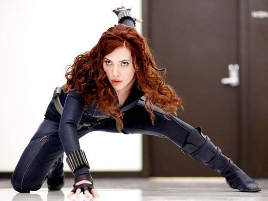
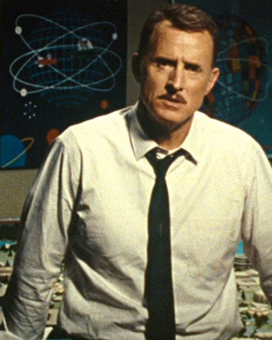
- With the arc reactor's palladium core slowly poisoning him, Tony spirals into a self-destructive cycle.
- Tony appoints Pepper Potts to CEO of Stark Industries.
- Before Tony completely self-destructs, S.H.I.E.L.D. steps in to help Tony get back on his feet and upgrade his arc reactor technology.
- Col. Rhodes gets an Iron Man Suit of his own and becomes the War Machine.
- Watching old footage from Howard Stark's promotional videos for Stark Enterprises, Tony Stark discovers a secret message from his father on how to create a new atom.
- Tony Stark creates a new atom to more efficiently and healthily power the arc reactor implanted in his chest thus saving his own life.
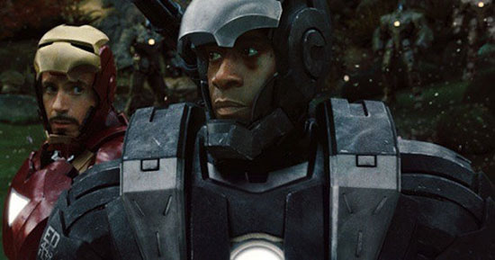
- Tony Stark is praised by the masses as Iron Man and pressured by the government to hand over his Iron Man technology
- Tony continues to engineer new and more efficient ways of putting on his Iron Man suit with his latest being a condensed suit in the form of a suitcase
- Tony allows Col. Rhodes to take a suit back to the government
- Nick Fury informs Tony that Howard Stark was one of the founding members of S.H.I.E.L.D.
- Due to Tony Stark's instability, Nick Fury decides to only resort to Stark as a consultant
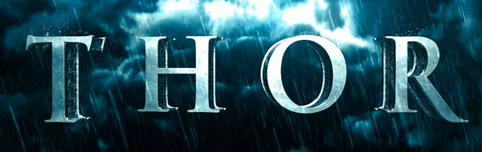
- Clint Barton aka Hawkeye makes his first appearance in the MCU in a brief cameo as a member of S.H.I.E.L.D.
- In a post-credits scene, Loki is seen on earth in a S.H.I.E.L.D. facility with his eye on the Tesseract
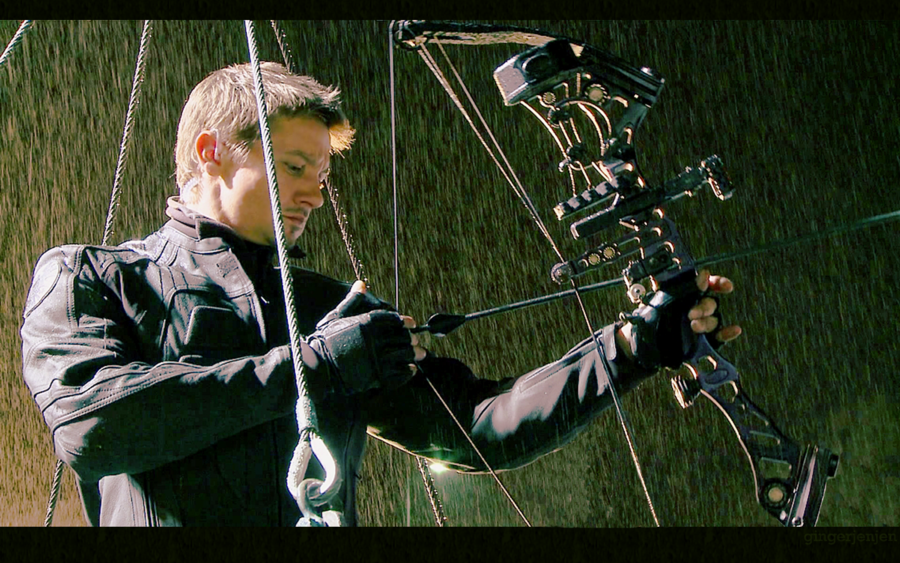
- Thor - son of Odin, god of Thunder and heir to the throne of Asgard - is introduced into the MCU
- Dr. Erik Selvig - astrophysicist - is introduced into the MCU
- Dr. Jane Foster - astrophysicist and love interest of Thor - is introduced into the MCU
- Odin - Ruler of Asgard - is introduced into the MCU
- Frigga - Queen of Asgard - is introduced into the MCU
- Loki - son of Odin - is introduced into the MCU
- Heimdall - gatekeeper of the bifrost - is introduced into the MCU
- Lady Sif - a fellow Asgardian warrior and friend to Thor - is introduced into the MCU
- Hogun - member of the Warriors Three and friend to Thor - is introduced into the MCU
- Fandral - member of the Warriors Three and friend to Thor - is introduced into the MCU
- Volstagg - member of the Warriors Three and friend to Thor - is introduced into the MCU
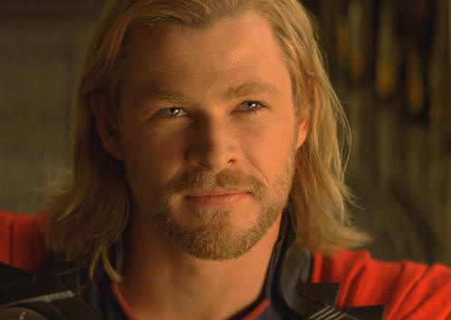
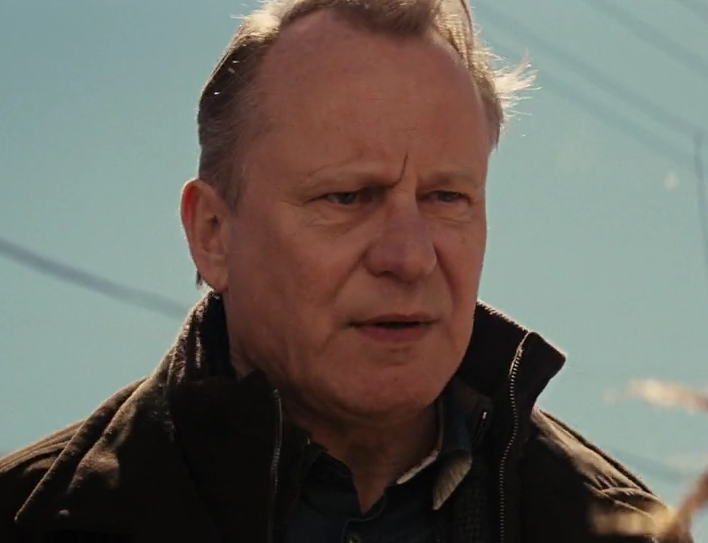

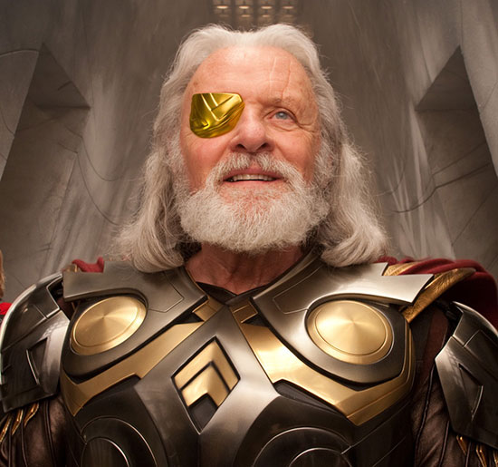
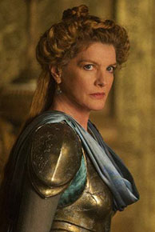
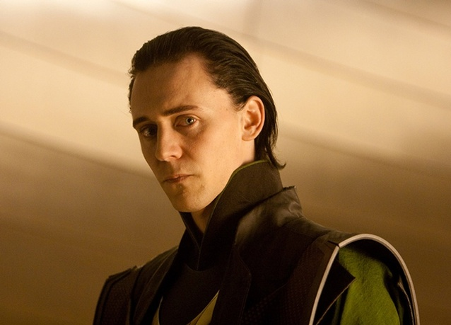
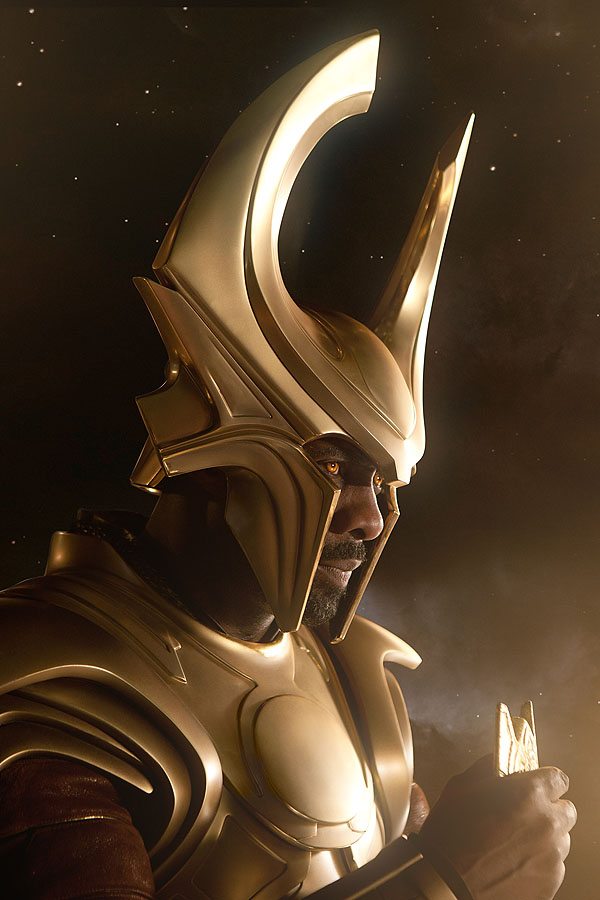
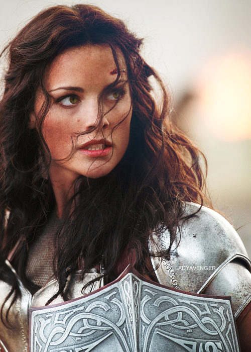
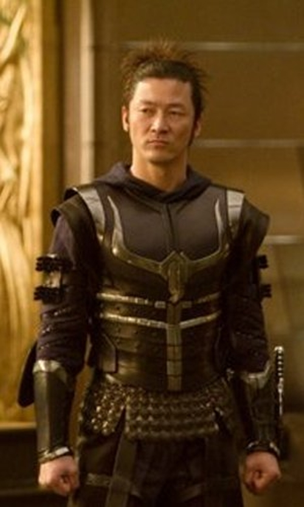
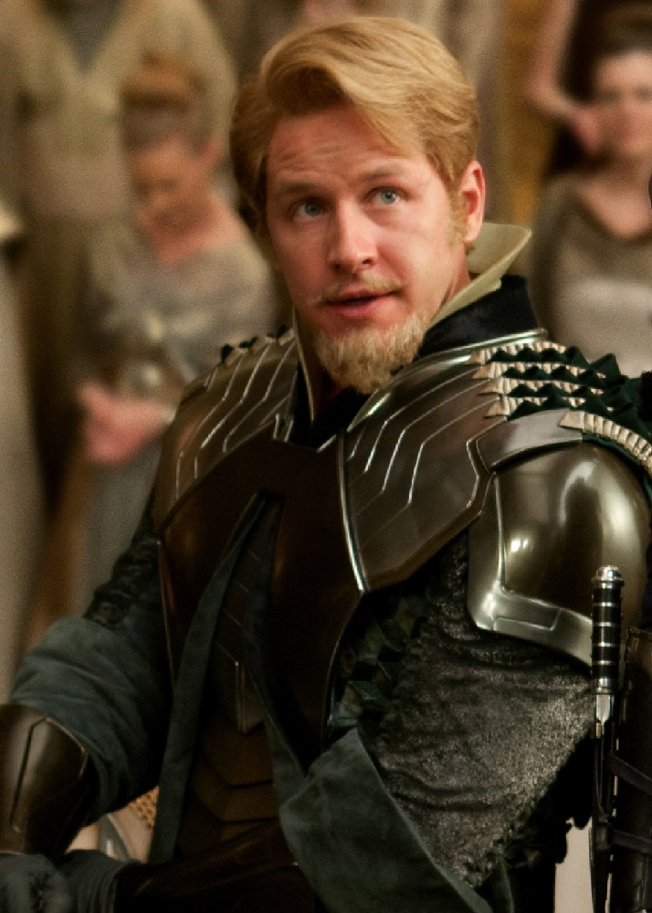
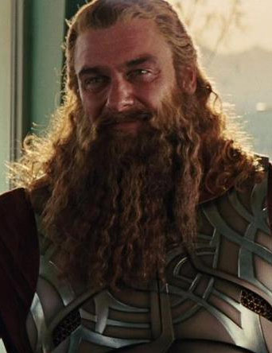
- Thor is stripped of his power as god of Thunder and exiled to earth until he can prove himself worthy of wielding his hammer Mjulnir
- Loki discovers he was adopted and his conspiracy plot to take Thor's place as ruler of Asgard is revealed
- In an attempt to kill Thor while he is still on earth, Loki sends the Destroyer to assassinate Thor
- To stop the Destroyer, Thor nearly sacrifices his life and incidentally proves himself worthy of wielding Mjulnir
- Thor destroys the Bifrost Bridge in order to stop Loki from wiping out a planet of Asgard's enemies, the Frost Giants
- Rather than allow Odin and Thor to save him, Loki chooses to drift off into space
- Asgard - Thor's homeworld - is introduced into the MCU
- Thor explains to Jane the concept of the Nine Realms and that both Earth and Asgard are places within the Nine Realms
- The bifrost - Asgardian technology used to transport individuals across the nine realms - is introduced into the MCU
- Throughout the film it's implied that Loki knows of secret ways to get in and out of Asgard without Heimdall being aware
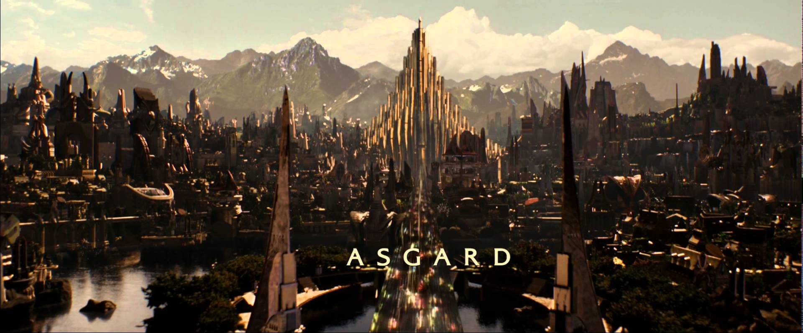
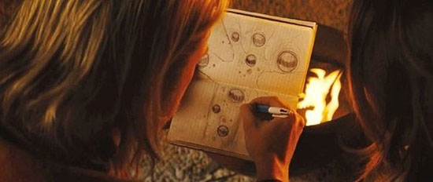
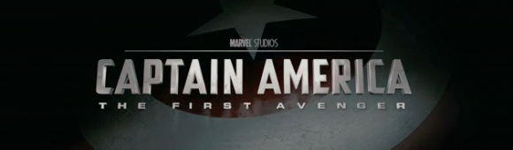
- Steve Rogers aka Captain America is introduced into the MCU
- Bucky Barnes - Steve Rogers' bestfriend - is introduced into the MCU
- Dr. Arnim Zola - right-hand man of the Red Skull, leader of Hydra - is introduced into the MCU
- Agent Peggy Carter - is introduced into the MCU
- A young Howard Stark - future father of Tony Stark - is introduced into the MCU
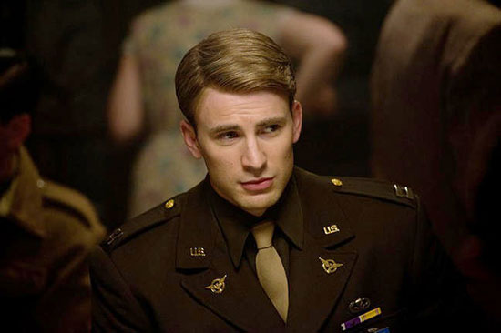
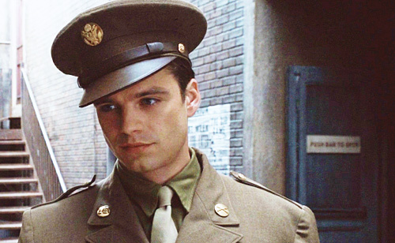
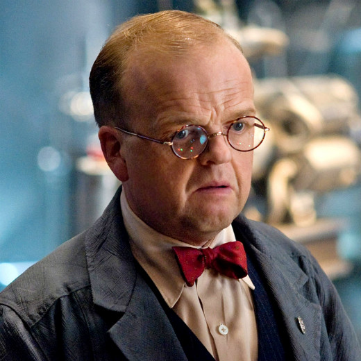
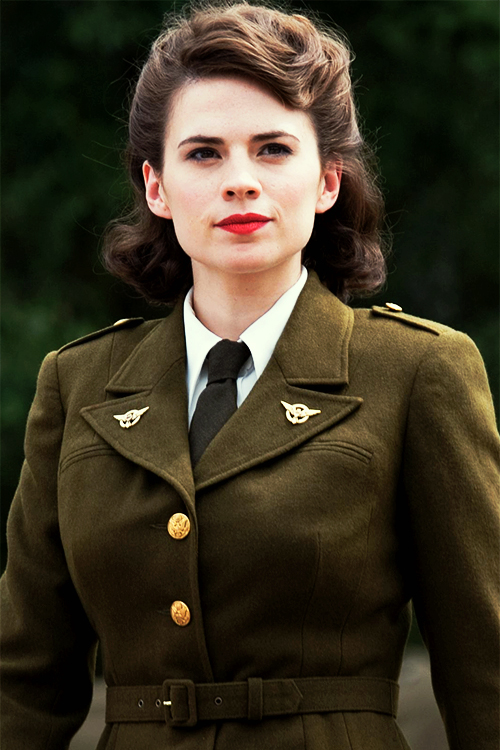
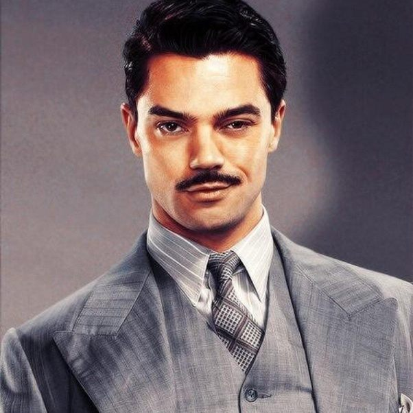
- Despite his size and health issues, Steve is determined to help the war effort and as a result is recruited as a candidate for an experimental super soldier procedure. During this process, Steve meets Peggy Carter and a budding romance is formed between the two.
- Steve becomes the one individual selected for the super-soldier procedure and is able to survive the transformation into the world's first super soldier
- Shortly after Steve Rogers becomes Captain America, he saves a unit of soldiers that were captured by Hydra. Bucky Barnes was among this unit of soldiers and as it turns out was being experimented upon by Hydra.
- Howard Stark gives Captain America his signature shield, made of a fictional rare metal known as Vibranium
- Captain America, along with Bucky Barnes and a select few individuals from the unit he rescued, leads a special taskforce to take down Hydra bases. In one of their final missions, Captain America and his squadron are able to capture Dr. Arnim Zola, however Bucky Barnes falls from a great height and is presumed to be dead
- Informed by Dr. Zola, Captain America and company locate Hydra's final stronghold and arrive just in time to stop Hydra from using a bomber plane to drop Tesseract-powered weapons of mass destruction over major American cities
- In order to stop the Hydra bomber plane, Steve Rogers intentionally pilots the plane into the Arctic ocean at the expense of his own life
- Though the Tesseract is eventually found by Howard Stark, they are unable to find Steve Rogers.
- Steve Rogers wakes up in present day New York City, nearly 70 years after the events of the film have transpired. Shortly after Steve Rogers wakes up, Nick Fury shows up to recruit Steve Rogers for the Avengers.
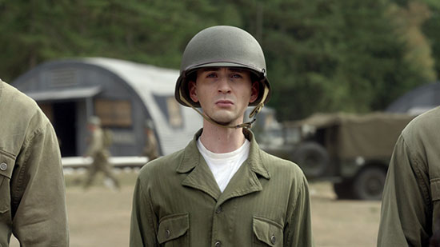
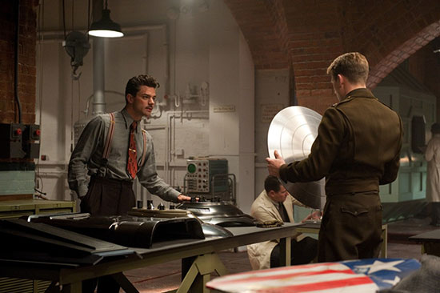
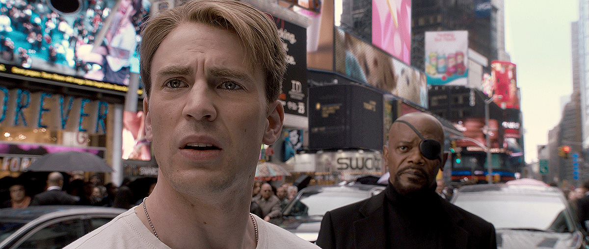
- Hydra, a fictional division of the WWII Nazis, is introduced into the MCU
- The Tesseract - which is later discovered to be an Infinity Stone known as the Space Stone - is introduced into the MCU
- Hydra uses the Tesseract to power new technology and new types of weapons, including bombs they intend to drop over major American cities
- The scientist which invented the super soldier serum is killed and the only remaining vials are destroyed. Further instances involving the attempt to recreate this serum can be seen in:
- The Incredible Hulk
- Captain America: Civil War
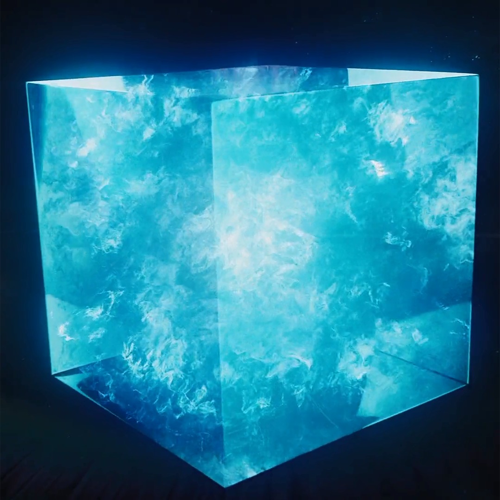

- Iron Man
- Iron Man 2
- Thor
- Captain America
- In a post-credits scene, Thanos makes his first appearance in the MCU

- Clint Barton, aka Hawkeye is officially introduced into the MCU
- Agent Maria Hill is introduced into the MCU
- Bruce Banner aka The Hulk is re-introduced into the MCU (now played by Mark Ruffalo)
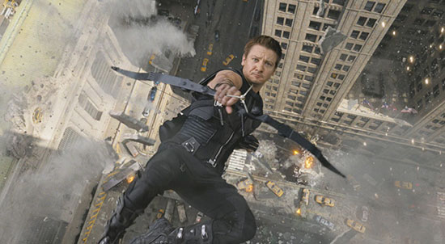
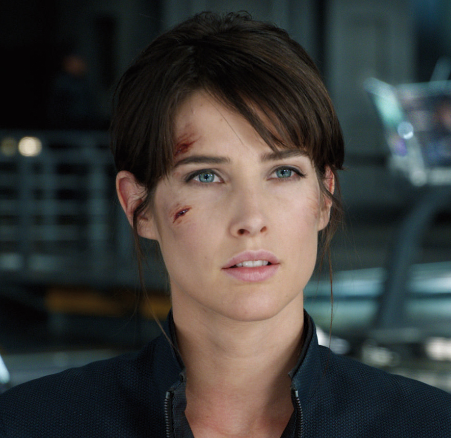

- Within a S.H.I.E.L.D. facility where the Tesseract is being experimented upon by Dr. Erik Selvig and under the watch of Clint Barton, a portal is opened by the Tesseract from which Loki appears with a scepter in hand
- Loki uses his scepter to mentally enslave Hawkeye and Dr. Erik Selvig
- In opening the portal, the entire S.H.I.E.L.D. facility collapses and Loki escapes with the Tesseract
- Nick Fury activates the "Avengers Initiative" sending Natasha Romanoff to recruit Bruce Banner, Agent Phil Coulson to recruit Tony Stark and personally going to recruit Captain America
- Throughout the film, Loki converses with an alien known as The Other in regards to the terms of their prior arrangement. As it turns out, this alien has been speaking on the behalf of Thanos
- When Captain America and Iron Man are successful in capturing Loki, Thor shows up to take part in questioning Loki and hopefully bring him back to Asgard
- Loki is imprisoned aboard a S.H.I.E.L.D. Helicarrier while Bruce Banner works to track down the Tesseract and the remaining Avengers work to discover what Loki's true plan is as well as S.H.I.E.L.D.'s true intentions with trying to find the Tesseract
- Bruce Banner and Tony Stark form a budding friendship
- Tony Stark's and Steve Rogers' differences make for the start of a budding rivalry
- Clint Barton, still under Loki's mind control, blows up one of the SHIELD Helicarrier engines throwing the Helicarrier into a state of chaos.
Amidst the ensuing chaos ...
- Bruce Banner loses control and transforms into the Hulk
- Thor and Hulk fight each other
- Loki is released and tricks Thor into ejecting himself from the ship
- Loki kills Phil Coulson
- Captain America and Iron Man work together to repair the damaged Helicarrier engine
- Clint Barton is released from Loki's mind control when he receives a hit on the head during a fight with Black Widow
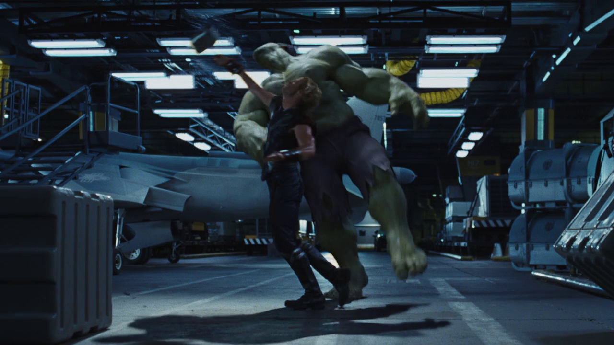 - Nick Fury uses Agent Coulson's death as a means of getting Tony Stark and Captain America to work together for the purpose of stopping Loki.
- Tony Stark and Captain America figure out that Loki is at Stark Tower.
- Erik Selvig, still under mind control, uses the Tesseract to open a portal to bring Loki's invading alien army known as the Chitauri to earth.
- Thor, Hulk, Iron Man, Black Widow, Hawkeye and Captain America come together as the Avengers and fight the Chitauri
- Hulk tosses Loki around like a ragdoll and then smashes him into the ground.
- In spite of Nick Fury's best efforts, a nuclear missile is launched on New York City. Iron Man redirects the missile through the portal stopping the Chitauri alien invasion and almost sacrifices his life in the process.
- The Avengers close the portal, capture Loki and retrieve the scepter.
- After the dust settles, the Avengers go their separate ways.
- Thor uses the Tesseract to return to Asgard along with Loki as his prisoner.
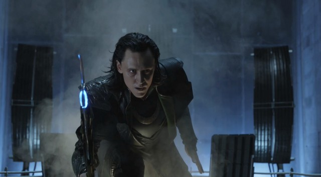
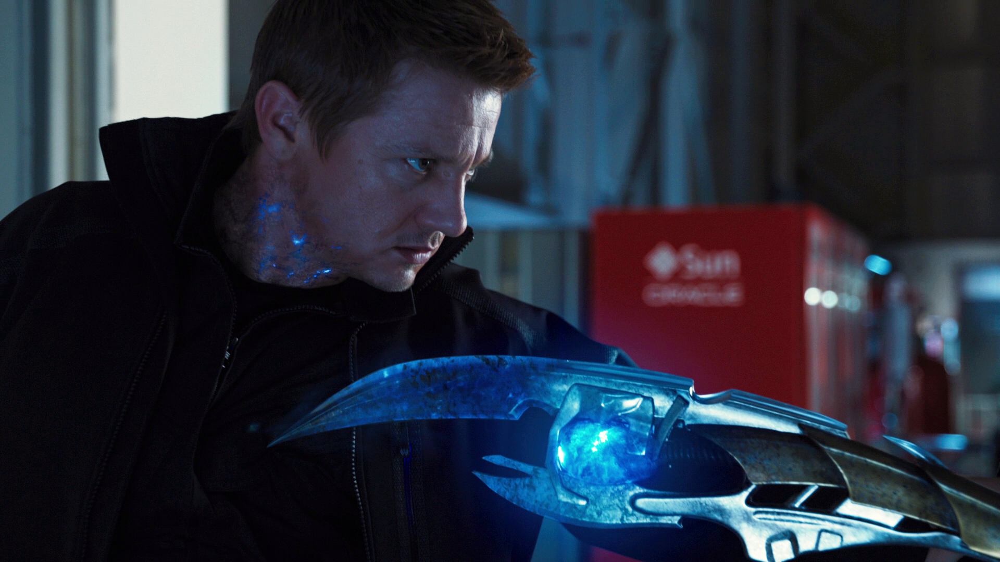
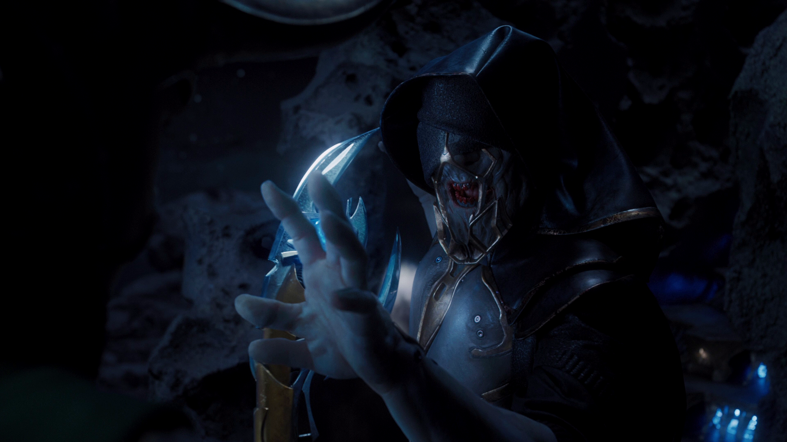

- Located within the gem of Loki's scepter, the Infinity Stone known as the Mindstone is introduced into the MCU
- Based in New York City, Stark Tower is introduced into the MCU
- The S.H.I.E.L.D. Helicarrier technology is introduced into the MCU
- Captain America and Iron Man discover that S.H.I.E.L.D. intends to use the Tesseract to power weapons similar to the weapons used by Hydra and that Thor's recent battle on earth against the Destroyer was their reason for trying to create more powerful weapons.
- After the battle of New York, Tony and Pepper work on rebuilding Stark Tower and a subtle reference is made to the fact that this tower will become the Avengers Tower